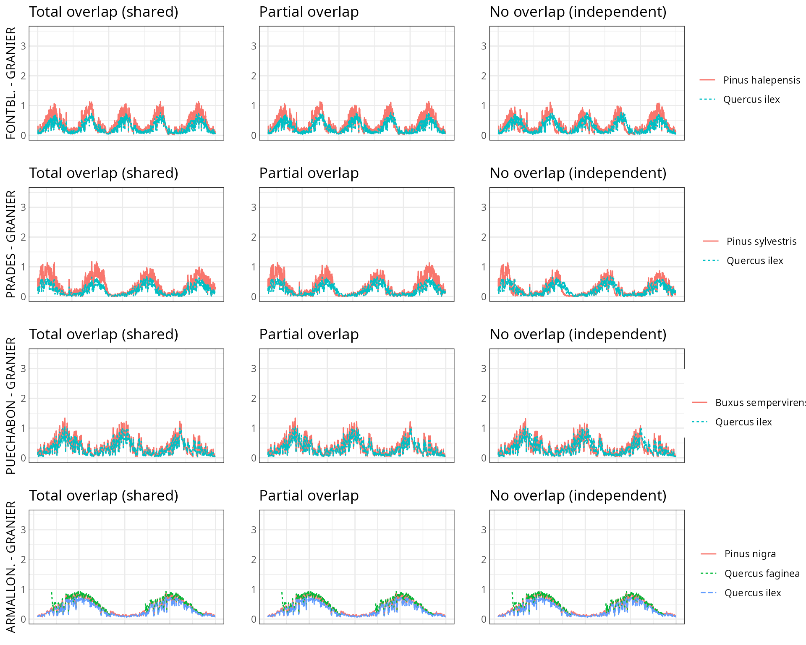
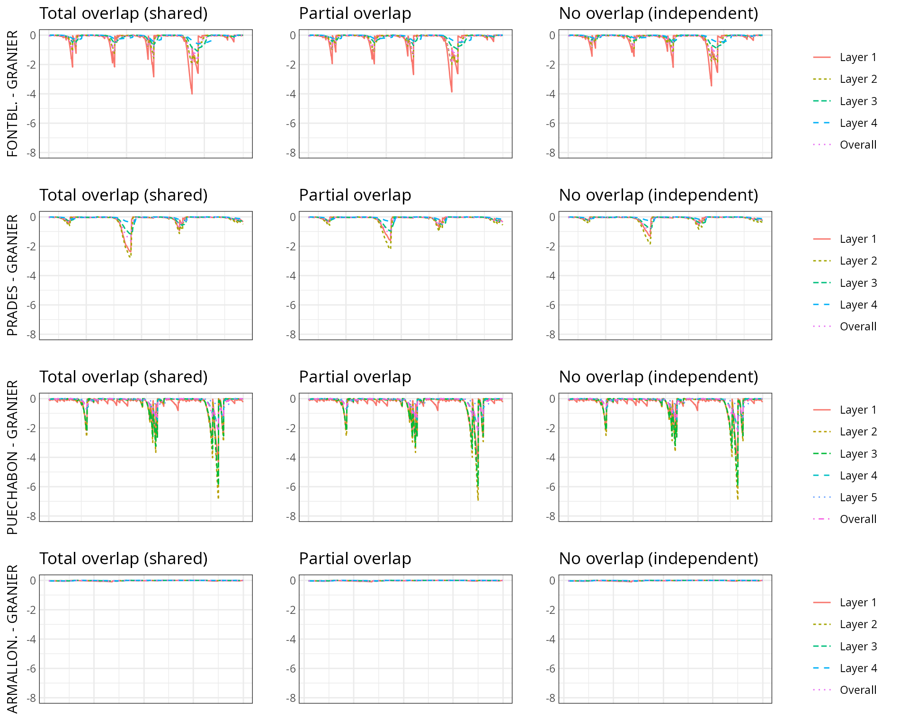

Water pools and species interactions
Miquel De Caceres (CREAF)
2024-02-19
Source:vignettes/workedexamples/PlantWaterPools.Rmd
PlantWaterPools.RmdAbout this vignette
By default, simulations in medfate assume that soil
moisture under all plant cohorts is the same (i.e. water sources
corresponding to vertical soil layers are shared among cohorts).
Therefore, the models neglect spatial variation in soil moisture
observed in mixed forest stands (Schume et al. 2004). Variations in soil
moisture beneath plant cohorts (and, implicitly, horizontal variation of
soil moisture) can be simulated in medfate if required
by the user (see control parameter rhizosphereOverlap).
This involves considering that a given plant cohort will perform water
uptake from the water pool surrounding its roots,
whereas it may not have access to the water beneath other plants.
However, there can exist some degree of horizontal overlap between water
pools exploited by different plants.
The aim of this vignette is to illustrate the sensitivity of the advanced water balance model (De Cáceres et al. 2021) to the consideration of independent water pools.
Simulations
As target forest stands we take five experimental plots whose data was already used when presenting the water balance model in De Cáceres et al. (2021). An evaluation of model performance in these experimental plots is given in Stand-level evaluation.
For each of these plots we performed two simulations with the
advanced water balance model
(transpirationMode = "Sperry"), one using the default
assumption of complete rhizosphere overlap
(rhizosphereOverlap = "total") and the other assuming
complete independence of water pools
(rhizosphereOverlap = "none"). Recovery from embolism was
assumed to depend on soil moisture
(cavitationRefill = "rate"). We performed a burn-in
simulation for the available weather of the forest plot (1 to 3 years,
depending on the plot), so that soil moisture, plant water potentials
and xylem percent loss conductance (PLC) could be equilibrated. After
this burn-in period, we run again the model for one year only, to
simplify the examination of the results.
Results
Transpiration per leaf area unit (l·m-2)
Differences in transpiration per leaf area unit can be observed in
simulations assuming total overlap (left panels) vs. simulations
assuming independent water pools (right panels). Transpiration is
similar during wet periods, but differences are notorious during dry
periods, where transpiration decrease curves become more distinct across
species.

Soil water potential (MPa)
Soil moisture dynamics do not differ between the two assumptions, if we examine the topmost soil layers (layers 1 and 2). However, soil moisture dynamics of deeper layers (mostly layer 4 but sometimes also layer 3) is different depending on whether water pools are considered or not. Presumably, this is the effect of some species drawing more or less water from deeper layers of their water pool depending on their root distribution, whereas in simulations without water pools the species with deeper root systems drives the dynamics of soil moisture in the stand. 
Range of leaf water potential (MPa)
Leaf water potential of species seems to be strongly affected by the decision of considering independent water pools. If those are not considered (total rhizosphere overlap), pre-dawn water potentials are similar across species (which drives drought stress and cavitation of the most sensitive species), whereas in simulations with independent water pools pre-dawn water potentials of different species equilibrate at different values, reflecting the different soil moisture levels in their water pools. This is for the benefit of species known to close their stomata early during drought or for species with more vulnerable hydraulic systems. For example, a species like Arbutus unedo in Can Balasc is forced to attain very negative (-5 MPa) water potentials in simulations with complete rhizosphere overlap, whereas it stays around safer levels (< -2.5 MPa) with independent water pools.

Percent loss conductance (%)
Percent loss conductance (PLC) values are rather similar for oaks in the two simulated scenarios. In contrast, PLC values are much lower for more sensitive species like pines or Arbutus, when considering independent water pools. This is in agreement with less negative water potentials in this simulation. PLC of most resistant species like Buxus sempervirens are low and little affected by the decision.


Discussion
In this vignette we illustrated the impact of considering or not spatial overlap of rhizosphere distribution among species in mixed forest stands. We evaluated the two extreme situations, namely total overlap and completely independent water pools. The second assumption seems to lead to more realistic results in terms of leaf water potentials and PLC values, which raises the question of which option should be the default in medfate. Reality probably lies between the two extreme situations, with a partial overlap of water pools. This option is also available in medfate, but a new problem arises as to how to decide the degree of overlap, and current implementation leads to results similar to those of assuming shared water pools (here redistribution plays an homogenization role). Moreover, it is possible that the (functional) degree of overlap be dynamic, i.e., the drier the soils the more unconnected and independent rhizospheres.
Bibliography
- De Cáceres, M., M. Mencuccini, N. Martin-StPaul, J.-M. Limousin, L. Coll, R. Poyatos, A. Cabon, V. Granda, A. Forner, F. Valladares, and J. Martínez-Vilalta. 2021. Unravelling the effect of species mixing on water use and drought stress in Mediterranean forests: A modelling approach. Agricultural and Forest Meteorology 296:108233.
- Schume, H., G. Jost, and H. Hager. 2004. Soil water depletion and recharge patterns in mixed and pure forest stands of European beech and Norway spruce. Journal of Hydrology 289:258–274.